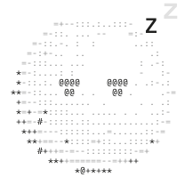

May · the first job
Made for the job
Find me a flight to Lisbon, first week of May
On it! I'll text you what I find.
background_start_task
agentflights, new
methodwritten for flights
toolskiwi.com, web
time30 minutes
parts3, side by side
agentflights, new
methodwritten for flights
toolskiwi.com, web
time30 minutes
parts3, side by side
MalpensaLinateBergamo
a last agent merges them
Only morning flights, please
passed to the job while it runs
Two morning flights from Malpensa on May 3. The best: 7:10, €84.

Between jobs
Kept as a folder
agents/flights/
AGENT.mdmethod, tools
NOTES.mdits notebook
runs.mda line per job
runs/briefs, answers
AGENT.mdmethod, tools
NOTES.mdits notebook
runs.mda line per job
runs/briefs, answers
Booked the second one!
NOTES.md
flies from Milan
morning flights only
Bergamo is often cheapest
4 May: booked the 2nd one
flies from Milan
morning flights only
Bergamo is often cheapest
4 May: booked the 2nd one
Nothing runs while it sleeps. It is files, not a process.
Yours to see and delete: ask what an agent knows, or have it forgotten.
June · the next job
It wakes up
Can you find me a flight to Tokyo in June?
background_start_task
agentflights
it getsits method
its notebook
its last jobs
addsonly what's new
agentflights
it getsits method
its notebook
its last jobs
addsonly what's new
A fresh conversation every time. It remembers what it wrote down, so old prices never come back.
Morning flights from Malpensa on June 12. The best: €612, one stop.
NOTES.md rewritten
flies from Milan
morning flights only
Bergamo is often cheapest
4 May: booked the 2nd one
long haul: 1 stop is OK
flies from Milan
morning flights only
Bergamo is often cheapest
4 May: booked the 2nd one
long haul: 1 stop is OK